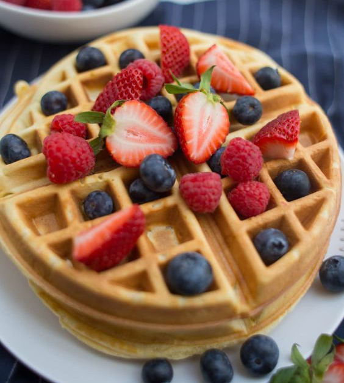

Вафли
Рецепт:
- Куриные яйца - 1 шт
- Сахар - 100 г
- Пшеничная мука - 125 г
- Молоко - 100 мл
- Соль - 2 г
- Пищевая сода - 0.5 ч. л.
- 82,5% масло сливочное - 30 г
Приготовление
- Разбейте свежее куриное яйцо в миску для замеса теста. К нему положите 100 г сахара. Перемешайте ингредиенты венчиком, добейтесь растворения кристалликов сахара и образования гладкой массы.
- Подогрейте молоко до 40 °С–45 °С и растопите масло. Используйте для подогрева микроволновку. Молоко добавьте к сахарно-яичной смеси. Размешайте ее тщательно венчиком, а затем добавьте растопленное сливочное масло и снова перемешайте.
- Отправьте в миску 0,5 ч. л. пищевой соды и половину просеянной муки. Мешайте тесто венчиком. Только после этого кладите оставшуюся муку и соль. Замесите тесто, которое по консистенции напоминает сметану средней жирности. Оставьте тесто на 10 минут при комнатной температуре.
- Включите электровафельницу. Когда она нагреется, выложите в нижние ячейки тесто. Кладите столько, чтобы тесто немного выступало из углублений. Заполнив ячейки, закройте вафельницу и подождите 3 минуты, проверьте степень готовности вафель. Если они еще не подрумянились, закройте прибор и ждите еще 1 минуту. По желанию добавьте сахарную пудру, свежие ягоды, взбитые сливки и все что придет в голову.